Prepared for MPGD26 (talk 4 Sep 2026). Campaign
TB_July2026_H4, 23 Jul – 3 Aug 2026. Analysis pass of 15–16 Aug 2026 run
end-to-end from the consolidated nTOF EOS copy
(/eos/experiment/ntof/data/x17/p2_sps_july) on lxplus HTCondor.
All figures regenerated tonight; every number traceable to a CSV/JSON under
data/ or the EOS analysis tree.
Five-plane setup on the H4 muon beam: two EIC uRWELL reference trackers (z = 0 / 1370 mm, DREAM FEU 1) around three P2 BASKET pad Micromegas — P2_IN (z = 320 mm), P2_MID (z = 630 mm), P2_OUT (z = 940 mm) — external scintillator/TCM trigger, DREAM readout with 16 × 60 ns waveforms. From 1 Aug the nTOF group's MX17 chamber ("Detector E") sat at z = 1155 mm.
The campaign has two phases with two readouts:
| phase | dates | runs | P2 readout | content |
|---|---|---|---|---|
| DREAM telescope | 23–29 Jul | 23 named runs | DREAM (waveforms) | commissioning, latency scan, mesh scans (330–450 V), drift scans (450–900 V), two 7×7 2D (mesh, drift) grids, high-stat efficiency runs, transparency extension, P2_IN chamber swap + re-commissioning |
| VMM campaign | 30 Jul – 3 Aug | run_21…72 | VMM3a/SRS (pads recabled) | VMM config scan (gain 3.0/4.5 mV/fC × peaking 25/50/100/200 ns), mesh + drift scans on VMM, long "operating" runs — repeated on both gases; DREAM keeps the uRWELLs (+ MX17) alive as reference |
vmm/runs/<run>/run_config.json, never
from the DREAM configs. All VMM results below do so.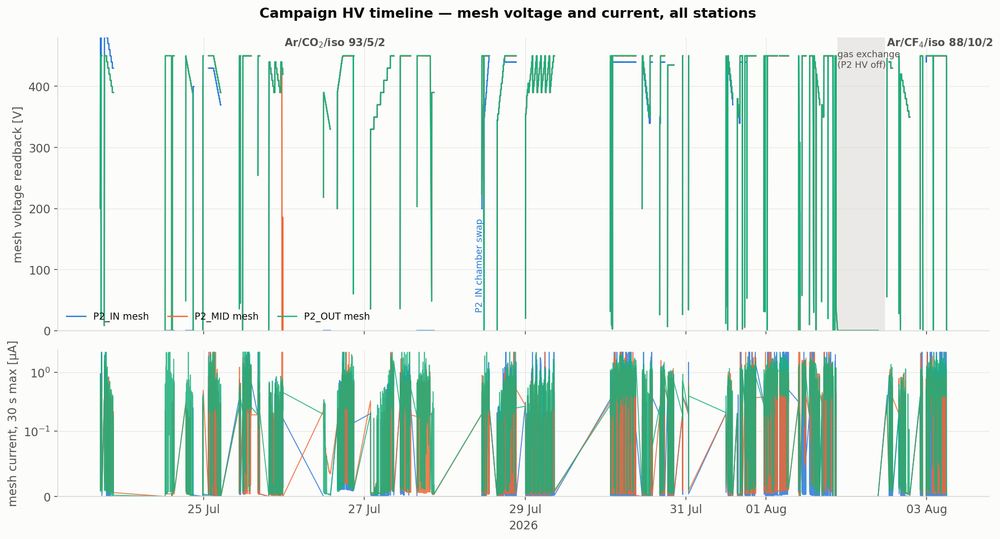
Every DAQ config recorded gas: "Ar/Iso 95/5" for the whole
campaign. The bottle actually flowing until 1 Aug was
Ar/CO2/iC4H10 93/5/2; after the
overnight exchange it was
Ar/CF4/iC4H10 88/10/2 (the mixture
selected by the 1 Aug Magboltz study). The changeover is confirmed in data
by the VMM turn-on shift and drift-latency drop (§8). Tonight the
gas field of all 136 pre-changeover configs on EOS (runs,
runs_meta and vmm trees, ≤ run_58) was corrected in place with an
explanatory gas_note; the post-changeover runs (run_59+) are
left for confirmation before being relabelled
Ar/CF4/iC4H10 88/10/2.
The EOS logbook (2026-07-28) settles it: P2_IN was the CERN bulk
chamber from first beam to 27 Jul 15:00 — repaired on 26 Jul (8:1
channel), pulled after its amplitude declined through
eff_nominal_1 — and replaced on 28 Jul by a new
metallic-mesh Micromegas, commissioned from scratch that morning
(p2in_hvrange_1/2). Both chambers therefore have full
efficiency curves (§4.4), and the entire VMM campaign ran with the
metallic-mesh chamber.
The workhorse measurement is urw_reference: two-point tracks
from the front/back uRWELLs (residual spread ≤ 0.66 mm, no rotation,
divergence understood as a virtual source ~40 m upstream), projected to each
P2 plane through a fitted affine frame (rotation −59.7° to −60.0°,
shear < 0.0013). Denominator hygiene: triggers the probe FEU never
recorded (from recorded_events.npz), HV-settle and spark-veto
windows are removed by time, and tracks must fall in the pad fiducial
(9 mm). Efficiency = a P2 cluster within 15 mm; the probe-radius scan
plateaus by 10 mm with an accidental slope of only 7×10-4 per
10 mm — read the result as ±0.3 % systematic.
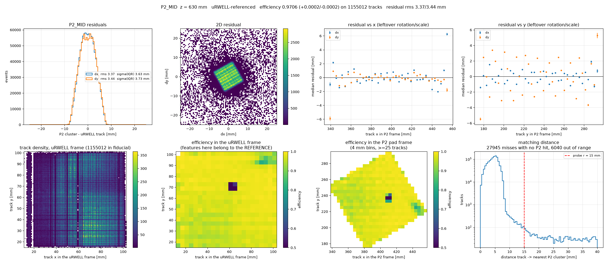
Spatial resolution: 3.37–3.39 mm (x), 3.44–3.47 mm (y) rms on all three stations — exactly the 12 mm/√12 binary-readout limit. Cluster size 1.05–1.08 pads. A cross-check with deliberately mis-set mapping moves the efficiency to 60 % — "if efficiency reads far below 90 %, suspect the mapping before the detector".
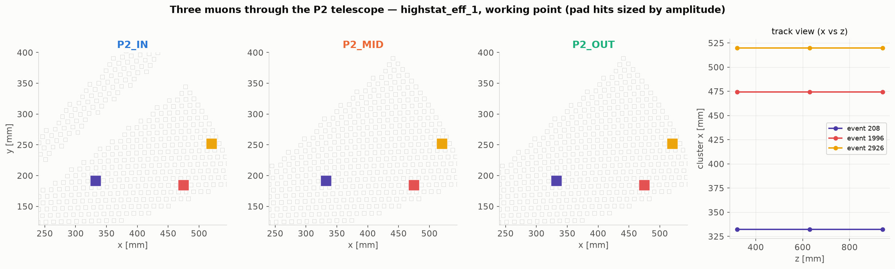
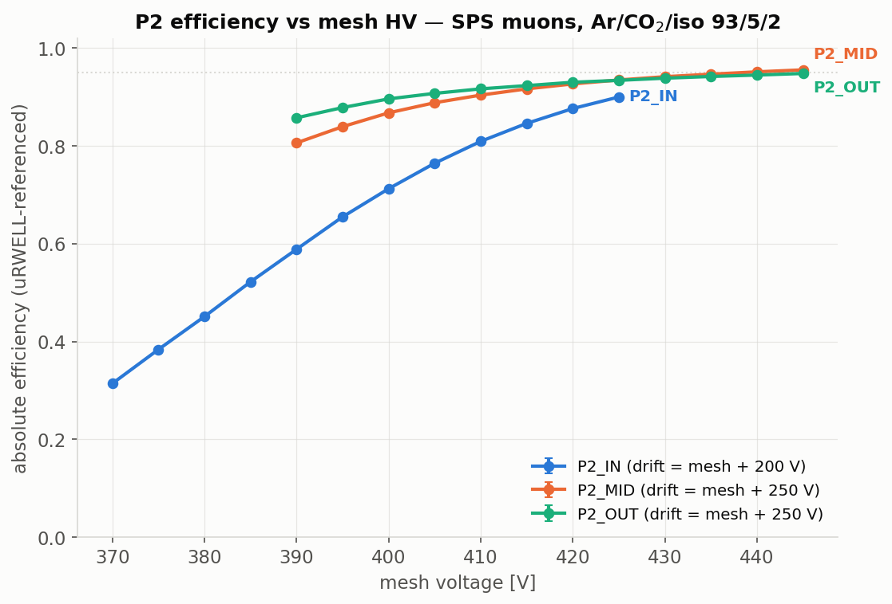
drift_mesh_scan_1,
25 Jul, drift field held constant per station). MID 0.81→0.96 and OUT
0.86→0.95 over 390→445 V; the CERN-era P2_IN 0.31→0.90 over 370→425 V.
No station reaches a plateau by the HV ceiling — the working point
sits at the top of the scanned range.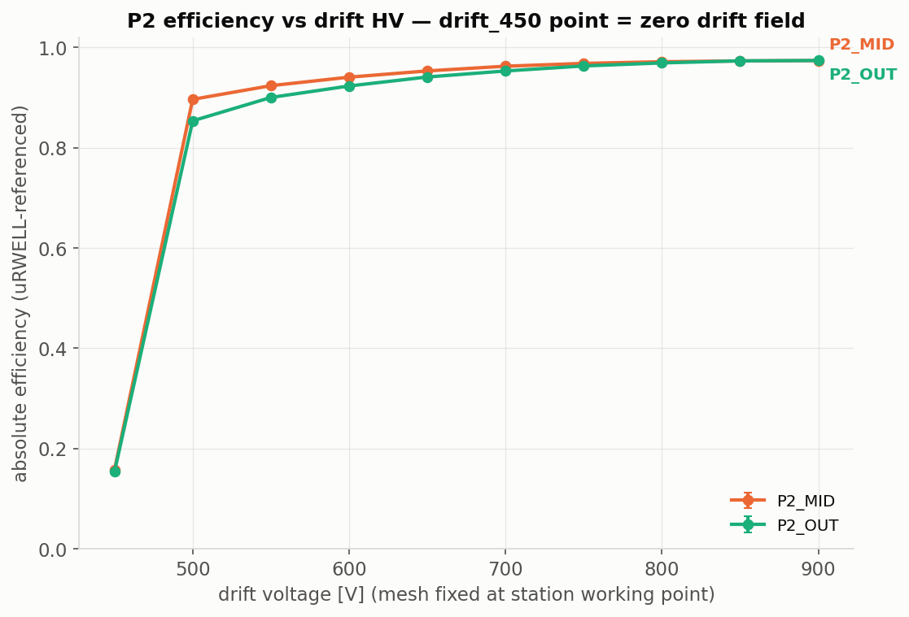
drift_transparency_1 run (mesh 390) extended the range to
gap 510 V: occupancy falls only 2–3 % with no turnover knee, so the
transparency plateau extends past the HV ceiling.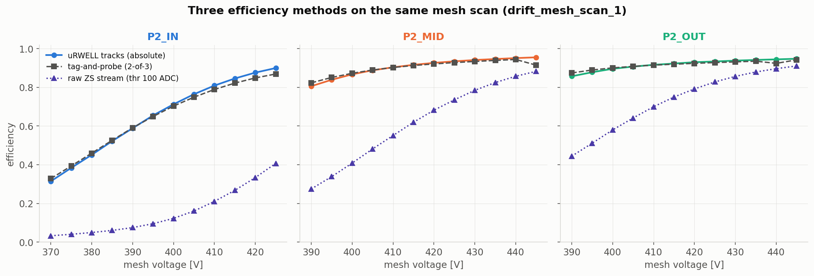
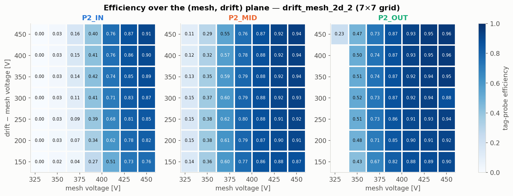
drift_mesh_2d_2, 27 Jul).
Efficiency is mesh-dominated; the drift dependence is mild above
gap ≈ 200 V. P2_IN's lower gain is visible as the whole surface shifting
one column right.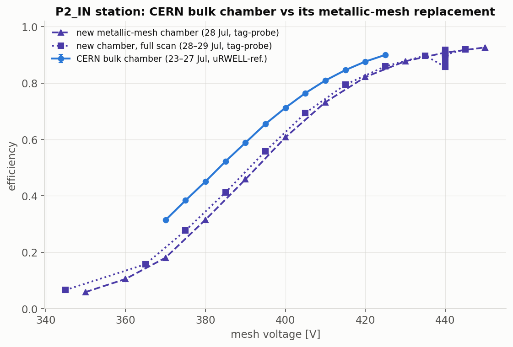
Computed tonight from the per-pad maps + the uRWELL miss classification
(full tables in data/loss_budget.csv,
data/findings.md). At the working point:
| mechanism (percentage points) | P2_IN | P2_MID | P2_OUT |
|---|---|---|---|
| total inefficiency | 3.5 | 2.9 | 4.0 |
| — no P2 cluster anywhere in the event | 2.9 | 2.4 | 3.3 |
| — cluster present but > 15 mm away | 0.6 | 0.5 | 0.6 |
| attributable to localized cold pads | 2.9* | 0.1 | 0.1 |
| efficiency drift across the run (max−min) | 0.4 | 1.3 | 1.4 |
| spark-veto dead-time (live-time, not eff.) | 0.5 | 0.2 | 4.1 |
*P2_IN's cold-pad loss is dominated by connector 11 (channels 704–767, in-beam efficiency 0.72 vs 0.95 for the same channels on MID/OUT) plus a nearly dead connector 14 on the beam fringe — a genuine cabling/FEU-input suspect, unique to P2_IN. In the uRWELL-referenced number part of these tracks is recovered by neighbouring pads within the 15 mm window.
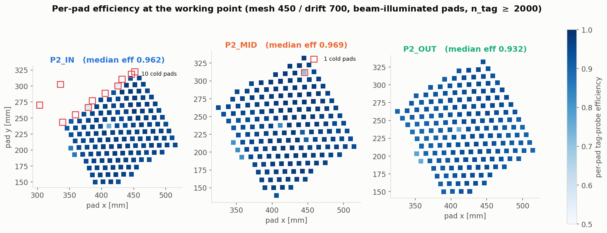
The known puzzle: highstat_eff_1 loses ~1.3 points over
2.5 h, but the recovery sub-run changed rate and pause together. The
new --time-bins mode of the uRWELL stage (run on condor for all
35 sub-runs of the three efficiency runs) breaks the degeneracy:
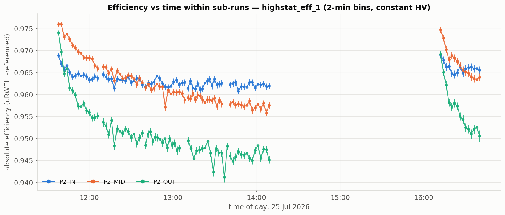
highstat_eff_1 (25 Jul, constant HV, 4.6 kHz). MID and OUT
decay smoothly with a ~30–40 min time constant and reset over the beam
pause, then re-decay (right block, 3.2 kHz); P2_IN is flat. The
initial-vs-settled band is 0.976→0.958 (MID) and 0.974→0.945 (OUT).
Reading: the decay re-arms during beam-off — the signature of a charging process (with a possible smaller rate term: the second block decays slightly less at 30 % lower rate), not beam or DAQ drift. P2_IN's flatness says the effect is chamber-specific, not environmental. Recommendation for the talk: quote "96–97 % settling to ≈96/95 % after ~1 h of beam at 4.6 kHz", with this figure as backup.
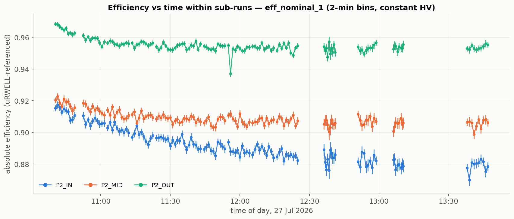
eff_nominal_1,
27 Jul, drift 750). Two things changed: overall levels are lower and
re-ordered (OUT 0.955, MID 0.91, IN 0.88) and P2_IN now declines
visibly within 3 h — this is the CERN chamber's documented deterioration on
its last morning; it was pulled at 15:00 that day. The MID/OUT level shift
vs 25 Jul (also visible in the tag-probe scalars) is an open item —
candidates: charging history, beam steering into the weaker pad region, and
the drift 700→750 change (§11).| period | hours@HV | P2_IN [sparks/h] | P2_MID | P2_OUT |
|---|---|---|---|---|
| July DREAM phase (gas A) | 49–60 | 0.3 | 0.2 | 1.3 |
| VMM phase, gas A (30 Jul–1 Aug) | 35 | 1.6 | 0.5 | 0.1 |
| VMM phase, gas B (2–3 Aug) | 11 | 1.4 | 0.2 | 0.3 |
(30 s windows with mesh Imon > 2 µA while at voltage;
data/spark_periods.csv.) Three stories: (i) P2_OUT was
the July offender — 69 counted sparks, up to 11 % dead-time in single
sub-runs, and sporadic current excursions that grow with drift field
(0.20→0.47 µA up to gap 500) — it conditioned quiet by August. (ii) The
new P2_IN chamber sparks at ~1.5/h through the whole VMM phase —
normal conditioning for a fresh chamber, worth watching. (iii) No spark
penalty is visible for the CF4 gas in its 11 hours — a key
worry about CF4 mixtures, so far absent. Zero HV trips after
25 Jul (the one P2_MID trip killed drift_mesh_2d_1, superseded
by _2).
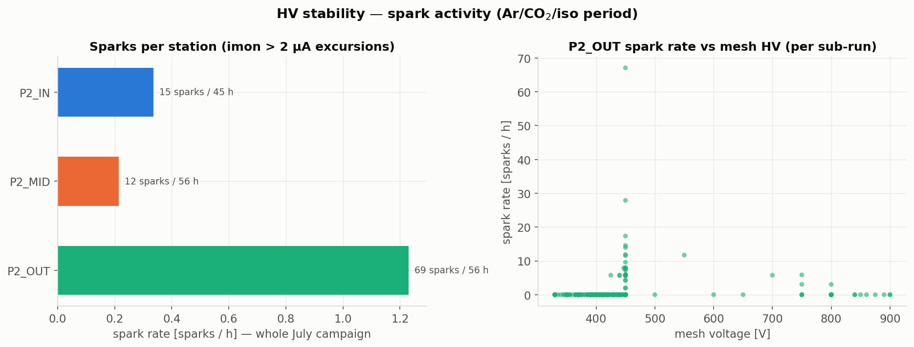
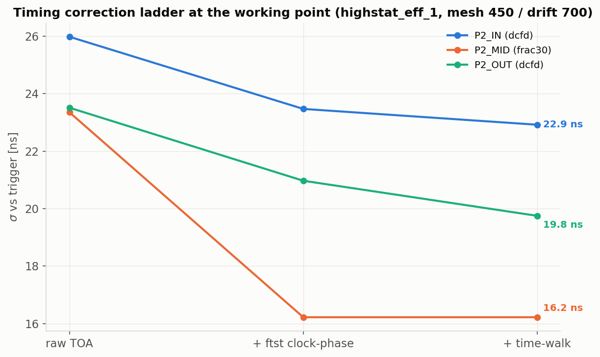
highstat_eff_1): raw → ftst clock-phase → time-walk. The ftst
slope is fitted per FEU (−9.6/−6.6/−5.5 ns per unit — never assume a
common clock phase). Best algorithms: frac30 (MID/OUT), dCFD (IN).
Pair-derived single-station resolutions:
P2_MID 17.1, P2_OUT ~18–20, P2_IN ~19–20 ns from this sub-run;
station-vs-trigger values 15.5/18.4/22.4 ns, stable to <0.5 ns over
4.5 h.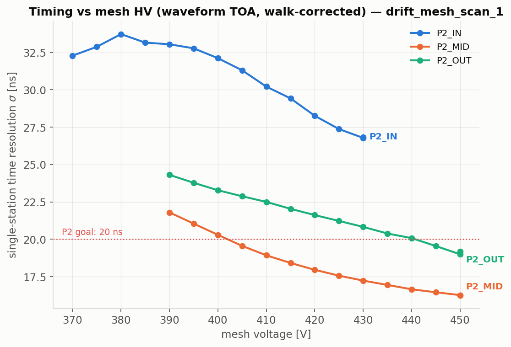
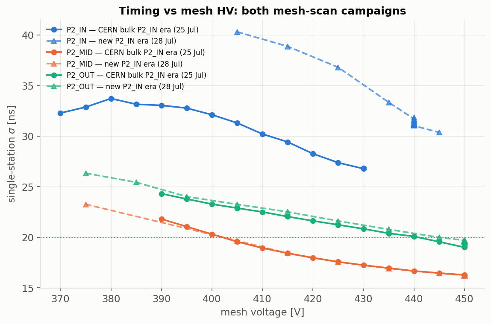
p2_mesh_drift_eff_1, dashed): MID/OUT reproduce, and the new
P2_IN tracks the other stations far better than the CERN chamber did.
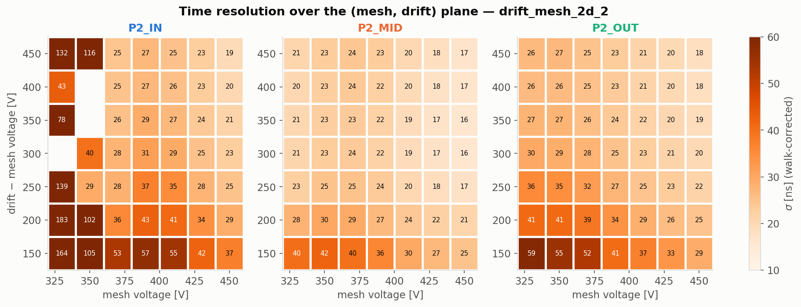
Bench cosmics 46 ns (drift-geometry-limited) → beam 15.5–22.4 ns per station at the working point → Garfield physics floor 3–7 ns → the 20 ns P2 goal is met at MID/OUT and the path further down is known (§8): the gas term, then the 13 ns electronics/walk floor.
The 1 Aug five-mixture Magboltz study (now in
gas_studies/) picked
Ar/CF4/iC4H10 88/10/2: 2.4× drift
velocity, flattest vd plateau, only +16 V mesh for equal gain,
gas-timing floor 8.8 → 3.3 ns at the working drift field
(data/gas_timing_model.csv).
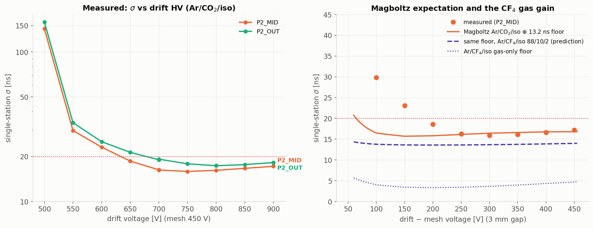
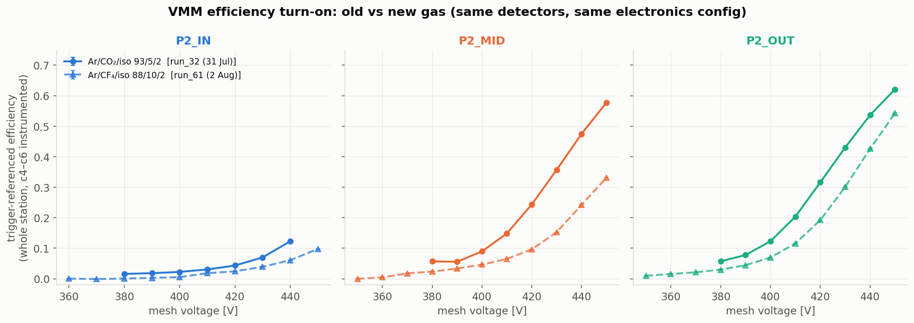
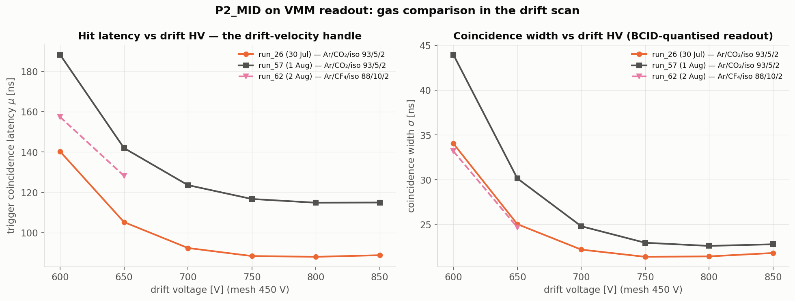
All ~3 400 usable VMM captures (130 sub-runs, runs 2–71, ~400 GB of
pcapng) were decoded tonight on condor with the vectorised
vmm_reduce pipeline: per-capture additive histograms +
trigger-referenced efficiency (trigger = VMM 0 ch 44, dedup 1.5 µs,
sideband-subtracted) now live at
analysis/vmm/<run>/<sub_run>/<capture>/.
| P2_IN | P2_MID | P2_OUT | |
|---|---|---|---|
| VMM eff., gas A nominal (run_24, 136 M trig) | 0.105 | 0.546 | 0.577 |
| VMM eff., gas B operating (run_63) | 0.112 | 0.347 | 0.571 |
| coincidence σ [ns] (BCID-limited) | 44–50 | 19–22 | 25 |
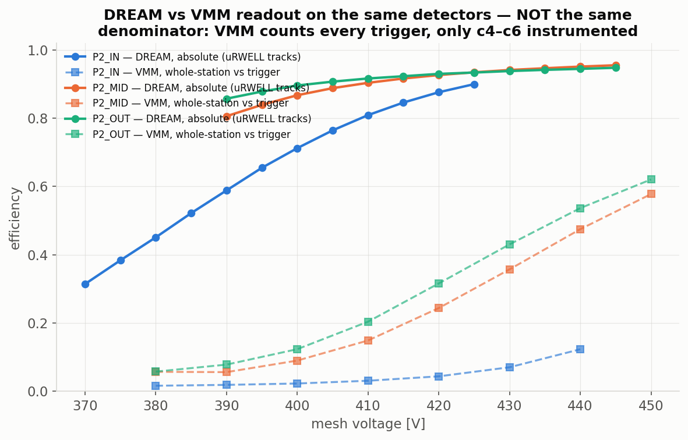
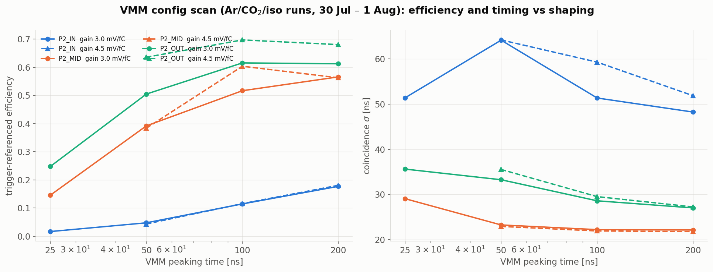
data/vmm_config_scan_table.csv.| detector | efficiency (WP) | timing σ | stability | verdict / action |
|---|---|---|---|---|
| P2_IN (CERN bulk, 23–27 Jul) | 96.5 % (uRW), turn-on 370–425 V, no plateau | 22.4 ns (amplitude-limited) | flat in time, but amplitude declined on 27 Jul; connector 11 weak, 14 dead | declined and was pulled — check connector 11/14 cabling before any re-use |
| P2_IN (metallic mesh, 28 Jul→) | 93 % at 450 V (tag-probe), plateau reached | tracks MID/OUT in the 28 Jul scan | conditioning sparks ~1.5/h through VMM phase | healthy; try 445–450 V as its working point next time |
| P2_MID | 97.1 % initial / ≈96 % settled | 15.5 ns — best station | 1.3-point charging band; 0.2 sparks/h | the reference station; nothing to fix |
| P2_OUT | 96.0 % initial / ≈94.6 % settled; per-pad distribution 4 pts low | 18.4 ns | 69 July sparks, up to 11 % dead-time; high-drift discharges; largest charging drift | works but is the weak unit: uniform gain deficit + spark propensity — candidate for gain calibration / HV contact inspection |
| uRWELLs (front/back) | rock-stable all campaign at 620/420 V — 1.15 M tracks/station in one sub-run, alignment constant, one ~5×5 mm reference hole identified and localized | keep exactly as-is as the reference system | ||
| MX17 "Detector E" | in the DREAM stream (FEU 3) from 1 Aug on both gases — not yet analysed | untouched dataset; optional gas A/B cross-check | ||
eff_nominal_1 (sub 10/14/15), mesh_drift_scan_up_1
(drift2_11), drift_mesh_scan_1 (drift_700) sit as intact
*.fdf.hang — re-decode needs the DREAM decoder binary (the DAQ
machines are off). These are also the 3 failures of tonight's 35-job
time-bins sweep._000/_001/_002): any analysis
globbing one file per sub-run silently loses up to 57 % — all tonight's
processing sums chunks.Ranked within each act; ★ = recommended core, ○ = backup. The deck in slides.html lays every option out one-per-slide for picking.
/eos/experiment/ntof/data/x17/p2_sps_july/
— runs/ (DREAM), vmm/runs/ (pcapng),
analysis/ (all stage products; new tonight:
analysis/vmm/…/scalars.json per capture and
analysis/urw_timebins/…).lxplus): DREAM rec+hits for
run_21–72 (sps_beam_analysis/condor/submit.sh); VMM reduce
(~/p2_condor_vmm on lxplus AFS, 130 jobs); uRWELL time-bins
(~/p2_condor_urw, 35 jobs).urw_reference/urw_lib.py (portable package/det-dir resolution)
and urw_reference/urw_p2_efficiency.py
(--time-bins) — plus this report directory.data/, and the session scratchpad
(aggregate.py, figs/fig_*.py) — deterministic
from the EOS products.gas_studies/ (results CSVs for 7
mixtures; still uncommitted — taskplan T15).Generated overnight 15→16 Aug 2026. Companion deck: slides.html.